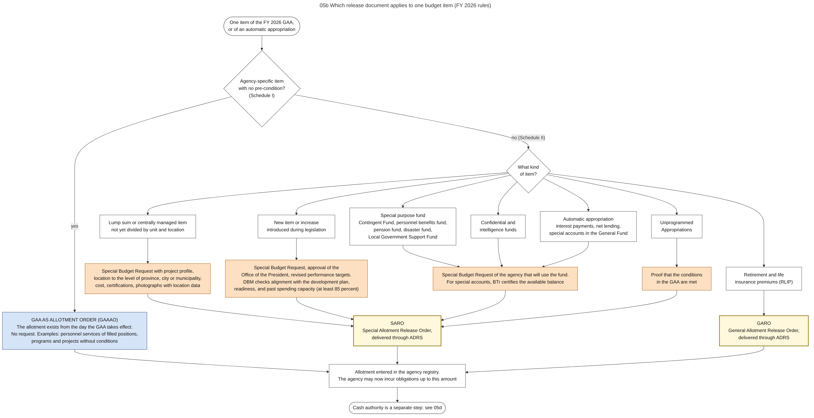

Diagram 05b · Mermaid flowchart
Which release document applies to one budget item (FY 2026 rules)
Question: For one item of appropriation, does the agency already have its allotment when the GAA takes effect, or must it ask DBM first, and with which document does DBM answer?

What the diagram shows
- Question: for one item of appropriation, does the agency already have its allotment when the GAA takes effect, or must it ask DBM first, and with which document does DBM answer?
- How to read it: follow the diamonds from the top. Blue = no request needed. Orange = a request to DBM is needed.
- Sources: all classes and examples come from the FY 2026 release guidelines, sections 3.7, 3.8, 4.1 and the two schedules [NBC599]. GAA as allotment order also in the FY 2026 GAA general provisions [GAA2026-GP].
- Warning: this is a summary of two long schedules. For a real item, check the schedules of National Budget Circular No. 599. Rules change with each year's circular.
- General knowledge, not opened in a source here: the conditions for Unprogrammed Appropriations.
Code

---
title: "05b Which release document applies to one budget item (FY 2026 rules)"
config:
flowchart:
wrappingWidth: 480
---
flowchart TB
%% QUESTION THIS DIAGRAM ANSWERS: for one item of appropriation, does the agency already have its allotment when the GAA takes effect, or must it ask DBM first, and with which document does DBM answer?
%% READING: follow the diamonds from the top. Blue = no request needed. Orange = a request to DBM is needed.
%% SOURCES: all classes and examples come from the FY 2026 release guidelines, sections 3.7, 3.8, 4.1 and the two schedules [NBC599]. GAA as allotment order also in the FY 2026 GAA general provisions [GAA2026-GP].
%% WARNING: this is a summary of two long schedules. For a real item, check the schedules of National Budget Circular No. 599. Rules change with each year's circular.
%% GENERAL KNOWLEDGE, NOT OPENED IN A SOURCE HERE: the conditions for Unprogrammed Appropriations.
S(["One item of the FY 2026 GAA,<br/>or of an automatic appropriation"]) --> Q1{"Agency-specific item<br/>with no pre-condition?<br/>(Schedule I)"}
Q1 -- "yes" --> G1["GAA AS ALLOTMENT ORDER (GAAAO)<br/>The allotment exists from the day the GAA takes effect.<br/>No request. Examples: personnel services of filled positions,<br/>programs and projects without conditions"]:::auto
Q1 -- "no (Schedule II)" --> Q2{"What kind<br/>of item?"}
Q2 --> K1["Lump sum or centrally managed item<br/>not yet divided by unit and location"]
Q2 --> K2["New item or increase<br/>introduced during legislation"]
Q2 --> K3["Special purpose fund<br/>Contingent Fund, personnel benefits fund,<br/>pension fund, disaster fund,<br/>Local Government Support Fund"]
Q2 --> K4["Confidential and<br/>intelligence funds"]
Q2 --> K5["Automatic appropriation<br/>interest payments, net lending,<br/>special accounts in the General Fund"]
Q2 --> K6["Retirement and life<br/>insurance premiums (RLIP)"]
Q2 --> K7["Unprogrammed<br/>Appropriations"]
K1 --> R1["Special Budget Request with project profile,<br/>location to the level of province, city or municipality,<br/>cost, certifications, photographs with location data"]:::req
K2 --> R2["Special Budget Request, approval of the<br/>Office of the President, revised performance targets.<br/>DBM checks alignment with the development plan,<br/>readiness, and past spending capacity (at least 85 percent)"]:::req
K3 --> R3["Special Budget Request of the agency that will use the fund.<br/>For special accounts, BTr certifies the available balance"]:::req
K4 --> R3
K5 --> R3
K7 --> R4["Proof that the conditions<br/>in the GAA are met"]:::req
R1 --> SARO["SARO<br/>Special Allotment Release Order,<br/>delivered through ADRS"]:::doc
R2 --> SARO
R3 --> SARO
R4 --> SARO
K6 --> GARO["GARO<br/>General Allotment Release Order,<br/>delivered through ADRS"]:::doc
G1 --> REG["Allotment entered in the agency registry.<br/>The agency may now incur obligations up to this amount"]
SARO --> REG
GARO --> REG
REG --> NEXT(["Cash authority is a separate step: see 05d"])
classDef default fill:#ffffff,stroke:#444444,color:#111
classDef auto fill:#d6e4f7,stroke:#1f4e8c,color:#111
classDef req fill:#fde0c2,stroke:#a35200,color:#111
classDef doc fill:#fff8dc,stroke:#8a6d00,color:#111,stroke-width:2px